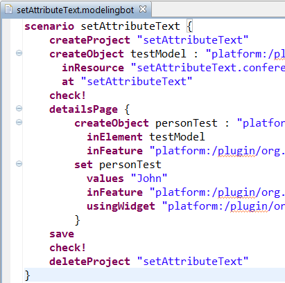
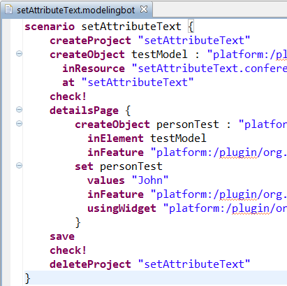

Chapter Standard EEF SWT Toolkit {
The SWT is composed of 7 main widgets:
* Text
* TextArea
* Checkbox
* Radio
* Combo
* Group
* Hbox
Section The Text widget {
The text widget allows users to edit _EAttributes_ by entering a String value.
The standard use case is to edit an _EAttribute_ as an *EString*.
For instance, in this scenario, an user is able do defines the firstname of conference participant using a text widget:
@M
@ref "org.eclipse.emf.eef.scenarios/models/setAttributeText.modelingbot"
M@
}
}

 

 http://www.eclipse.org/eef
http://www.eclipse.org/eef